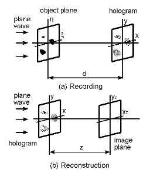
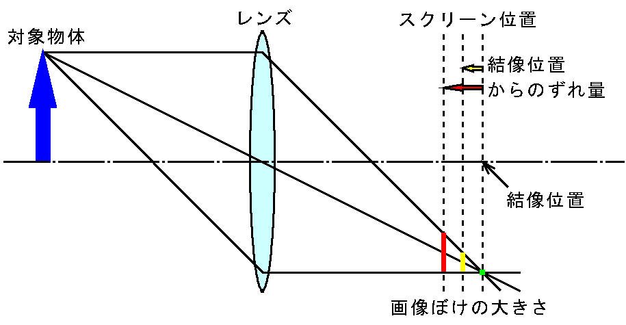
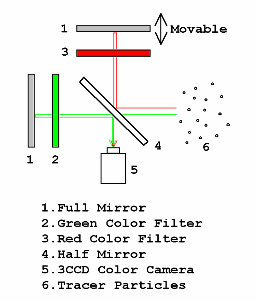
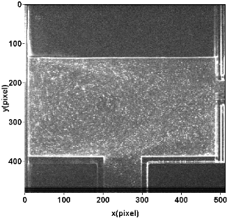
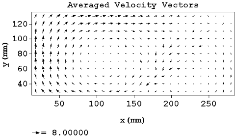

english
トップ
ページ
研究
テーマ
研究
報告
研究
スタッフ
研究
設備
研究室の
所在地
教育・研究
理念
産学連携
のご案内
学生の
募集
講義に関
する情報
研究関連
リンク
用語解説
目 次
ディジタルホログラフィ
depth-from-defocus
粒子画像流速測定法（particle image velocimetry, PIV）
ディジタルホログラフィ
通常の写真では、３次元物体を撮影しても２次元画像として記録・表示されるだけですが、
ホログラフィ（holography）は３次元物体をあるがままの状態で記録する技術です
。例えばホログラフィで記録した物体を見るとき、少し右から見るのと少し左から見るのとでは、本当に物を見るときのように見え方が変わってきます。
ホログラフィには物体を記録するステップと記録した物体を再生するステップがあります。
通常の写真では、前者はカメラでシャッタをきりネガフィルムを作製することに対応し、後者は現像したネガフィルムを直接見るか焼き付けたプリントを見ることに相当します。ホログラフィではネガフィルムに対応する記録板をホログラムと呼び、また照明には干渉性の強いレーザを用います。下の図は、(a) 黒く示された３つの物体(object)にレーザ光(plane wave)を照射してその後ろに出来る干渉縞（ホログラムパターン）をホログラム(hologram)に記録するステップと、(b) 記録されたホログラムにもう一度レーザ光だけを照射すると物体像(image)が見えてくるステップを模式的に表したものです。

ディジタルホログラフィ(digital holography)は上述の像再生過程を観測したホログラムパターンを用いてコンピュータ内部で処理するものです。
ホログラムパターンはCCDカメラなどの電子機器で観測しますので、通常のホログラフィのようにホログラム現像などのオフライン処理を必要としません。また、再生像は波動光学(wave optics)の基礎式を用いて求めますので、計算機処理で必要とする情報を得ることができます。
ディジタルホログラフィに関する報告
ページの先頭へ
depth-from-defocus
２次元画像から３次元奥行き情報を得る１つの方法が、画像ぼけと奥行き位置の関係を利用する depth-from-defocus です。
下の図のように、対象物体を凸レンズでスクリーンに結像させる場合を考えると、レンズの結像公式を満足する位置では、対象物体のある１点からでた光はスクリーン上の１点に集まりますが、スクリーン位置がずれるとそのずれ量に相当する大きさの領域に光は広がります。これが画像ぼけとなります。逆にこの画像ぼけの大きさを画像処理で求めると、結像位置からのずれ量を得ることができます。そして、その
ずれ量とその時のスクリーン位置とから結像位置がわかるので、レンズの結像公式からレンズ−対象物体間距離が求まります。

照明強度・粒子の散乱条件の不均一などのため、同じ画像ぼけを示しても同じ奥行き距離に対象物体が存在しないこともあります。そのため、焦点位置の異なる２台のカメラを用いて同じ対象物体を同時に観測し、照明強度のバラツキ等の影響を相殺して奥行き位置を求めるという手法が取られます。本研究グループでは、
カメラ設定の簡便な単眼計測を行うために、下図に示す光学系と３板式CCDカメラを用いています。
上の全反射鏡（１）を上方に移動させると緑と赤の経路の長さに違いが生じ、画像ぼけ程度の異なる像が観測されます。そして、それら焦点位置の異なる画像を赤画像および緑画像として記録し、それらの２枚の画像間で演算を行って粒子奥行き位置を求めます。

Depth-from-defocusに関する報告
ページの先頭へ
粒子画像流速測定法（particle image velocimetry, PIV）
粒子画像流速測定法（particle image velocimetry, PIV）
は、従来の熱線流速計やレーザー流速計のようにある測定点における流速を測定する手法と異なり、
２次元または３次元空間における速度分布を時々刻々測定できる
点に特徴があります。下の図は右側面から噴流が左向きに出ており、水槽内を循環しながら底面の流出口から下方に流れ出ている様子を可視化しています。この流れの可視化は古くから行われており、流れの定性的な様子を観測するための手法でしたが、最近ではディジタル画像処理が高精度化・高速化され、流れの可視化画像を画像処理して流速分布などの定量計測が可能となりました。これが粒子画像流速測定法であり、２次元画像を用いるため流速が空間分布として得られます。解析手法は様々なものが提案されていますが、下図のような時系列の画像を並べて局所的な可視化パターンを時間的に追跡することがよく行われます。

下の速度ベクトル図は上に示した流れ場を画像解析した時間平均結果です。右側壁からの流入部が少し不明瞭ですが、左半分の領域において時計方向に旋回する流れが観測できています。標準的な画像取り込みボードと短時間に２回連続パルス発光できる照明装置があれば、かなり高速の流動現象も捉えることが出来ます。

粒子画像流速測定法に関する報告
ページの先頭へ
© Measurement System Laboratory, Kyoto Institute of Technology.
 ディジタルホログラフィに関する報告
Depth-from-defocusに関する報告
粒子画像流速測定法に関する報告
ディジタルホログラフィに関する報告
Depth-from-defocusに関する報告
粒子画像流速測定法に関する報告